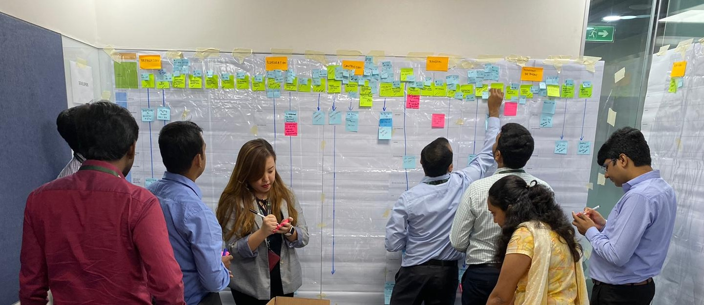
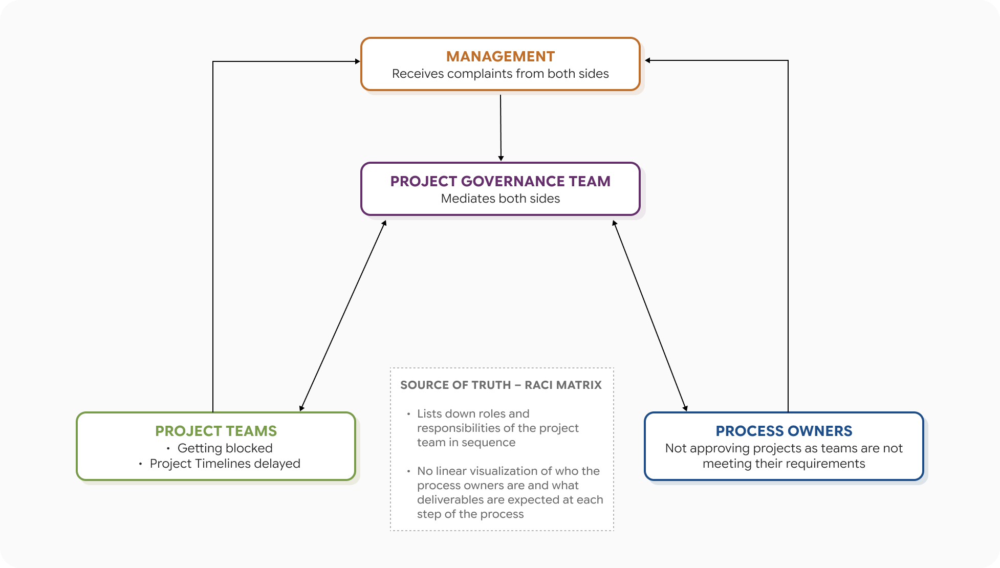
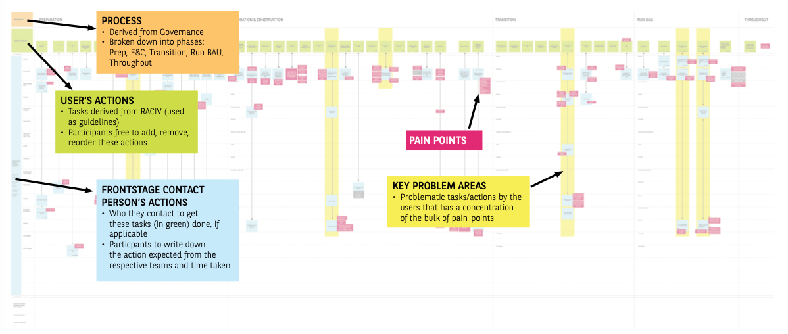

Historically, there has been a constant stream of complaints on the ground about the long and painful project delivery journey in the IT department of a financial services organization, where stringent compliance requirements and legacy systems made every delivery checkpoint difficult for project teams to clear. There was also no official process defined and documented for project teams to follow, other than a RACI matrix to map out roles and responsibilities for tasks.
Seizing the opportunity of an ongoing IT Transformation initiative, I investigated the current delivery journey by conducting 12 role-specific Service Design Blueprinting workshops with developers, business analysts, project managers, scrum masters, tech leads and testers from the Singapore and Chennai offices, to improve the project teams' experience of delivering a project.
I merged the role-specific blueprints to form the organization's first official delivery journey map, which greatly helped the project governance team and management to visualize the end-to-end journey across all six project team roles, and the supporting teams (e.g. Security, Compliance, Strategy & Architecture) that owned different parts of the process. It also allowed them to pinpoint exactly where pain points and bottlenecks occurred in the process, and which teams were involved at those points.
From there, I also utilized the delivery journey map to:
These findings also kicked off a ground-up problem solving initiative known as "Change Angels", which will be covered in a later section.

A mixed method study consisting of surveys, focus group discussions, contextual inquiry and service design blueprinting was initially proposed to management. After considering the budget and timeline allocated for this study, I decided to proceed with a Service Design Blueprinting Workshop done in the form of a focus group discussion.
Service Design Blueprinting was chosen because it was the only method that could simultaneously capture the following:

I adapted the standard service design blueprint format in two ways:
The blueprinting workshops were first piloted in the Singapore and Chennai offices across 7 sessions for each of the roles in the project teams: Developers, Technical Leads, Scrum Masters (for Agile Projects), Project Managers (for Waterfall Projects), Business Analysts, Testers, Division Heads
As the management saw immense value in these blueprinting workshops from the Singapore office pilot's findings, I was then sent to the Chennai office to continue with conducting 6 more blueprinting sessions as there were many project team members based there too.
The blueprint was then evaluated from three key areas:
Besides what we sought out to identify in the synthesis process, the blueprint also surfaced findings that we were not expecting to discover:
As the blueprinting workshops surfaced a large number of pain points (293 of them), I held a prioritization session with management and the project governance team where we sorted pain points based on its level of impact (on the delivery journey and organization) and level of difficulty (to resolve it).
Pain points that emerged as high impact and low to mid level of difficulty to resolve were shortlisted to be transformed into problem statements for the organization's new Change Angels initiative, while the other pain points were stored in the Project Governance team's backlog to be tackled in the future.
Change Angels is a ground-up initiative that involves volunteers from various departments collaborating cross-functionally to solve company wide issues using the design thinking process. I was involved in this initiative as part of the organizing team, and I also facilitated one of the volunteer teams' weekly meetings.
In the first season of Change Angels, 3 of the pain points filtered from the blueprinting workshops were made into problem statements for 3 volunteer teams to resolve over the span of 2 months. One of the biggest pain points was the lengthy time taken for project teams to complete tasks listed in the Go-Live Checklist for teams to push their project into production because the requirements were not specific and it was difficult to locate the checklist in the company's internal drive.
The team that I facilitated successfully managed to create and launch a Sharepoint page titled MAPLE (Make A Project Life Easier) that centralizes the location of all the checklists (including the Go-Live Checklist) that project teams have to fill up in their project delivery journey, and also provides explanations for requirements that were previously unclear. MAPLE has evolved into one of the beloved products owned by the project governance team, and it is still being used by the organization today, more than 5 years later.
There were many who were skeptical about ground-up initiatives in the organization, as Change Angels was not the management's first attempt at it. However, the success of my team and the support they got from management to launch the solution gave everyone in the organization confidence that ground-up initiatives are actually possible and effective.
This was a very meaningful project to me as it was the first time the organization tried a bottom up approach to problem-solving, and also my first time experimenting with the use of Service Design Blueprints as a user research method. I received a lot of positive feedback from the workshop participants that this is a rare opportunity for many of them to highlight the critical pains that they face in their daily work to the management.
In organizations that are new to user experience design, it is common for us UX designers to have to make customizations to the theoretical user research methodologies in order to achieve the objectives we would like to get from our engagements with the users. This taught me the importance of being adaptive and flexible with my UX Research knowledge to fit it to the context of the organization I'm in.